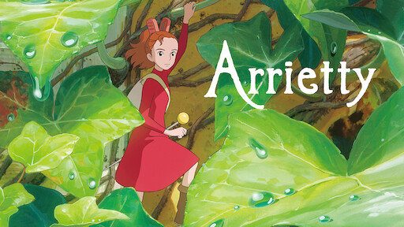
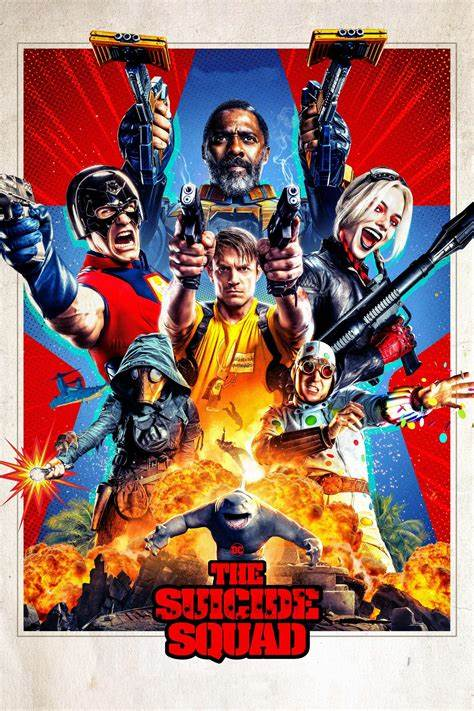

O Mundo dos Pequeninos
Arrietty e sua família passam todos os dias se protegendo dos grandes moradores da casa onde vivem.
Pequeninos, eles conhecem cada detalhe e armadilhas que podem revelá-los.
Certo dia, um novo morador entra na casa e inicia uma amizade cheia de aventuras com a pequena Arrietty.

Esquadrão Suicida
A encarnação moderna do Esquadrão Suicida é uma equipe de vilões que realizam missões secretas em troca de penas de prisão reduzidas.
O nome do Esquadrão Suicida faz alusão à natureza perigosa de suas missões.
A equipe é baseada na Penitenciária Belle Reve sob a direção de Amanda Waller.

Aves de Rapina
Aves de Rapina é um filme estadunidense de super-heroínas de 2020, baseado no grupo Aves de Rapina da DC Comics e uma continuação do filme Esquadrão Suicida, de 2016.
É o oitavo filme do Universo Estendido da DC, após o adiamento de Mulher Maravilha 1984 para junho de 2020, sendo dirigido por Cathy Yan, com o roteiro de Christina Hodson
e estrelado por Margot Robbie, Mary Elizabeth Winstead, Jurnee Smollett-Bell, Rosie Perez, Chris Messina, Ella Jay Basco, Ali Wong e Ewan McGregor.